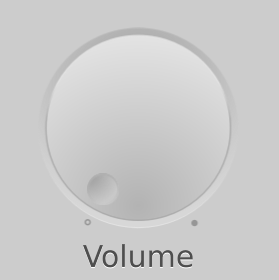

Dial QML Type
A circular dial that is rotated to set a value. More...
| Import Statement: | import QtQuick.Extras 1.4 |
| Since: | Qt 5.5 |
Properties
- activeFocusOnPress : bool
- hovered : real
- maximumValue : real
- minimumValue : real
- pressed : bool
- stepSize : real
- tickmarksVisible : bool
- value : real
Detailed Description

The Dial is similar to a traditional dial knob that is found on devices such as stereos or industrial equipment. It allows the user to specify a value within a range.
Like CircularGauge, Dial can display tickmarks to give an indication of the current value. When a suitable stepSize is combined with tickmarkStepSize, the dial "snaps" to each tickmark.
You can create a custom appearance for a Dial by assigning a DialStyle.
Property Documentation
activeFocusOnPress : bool |
This property specifies whether the dial should gain active focus when pressed.
The default value is false.
See also pressed.
[read-only] hovered : real |
This property holds whether the button is being hovered.
maximumValue : real |
minimumValue : real |
[read-only] pressed : bool |
Returns true if the dial is pressed.
See also activeFocusOnPress.
stepSize : real |
The default value is 0.0.
tickmarksVisible : bool |
This property determines whether or not the dial displays tickmarks, minor tickmarks, and labels.
For more fine-grained control over what is displayed, the following style components of DialStyle can be used:
The default value is true.
value : real |
The angle of the handle along the dial, in the range of 0.0 to 1.0.
The default value is 0.0.